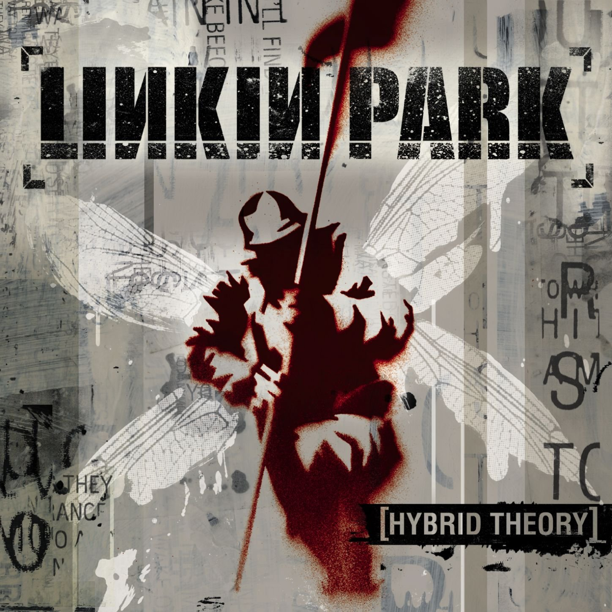
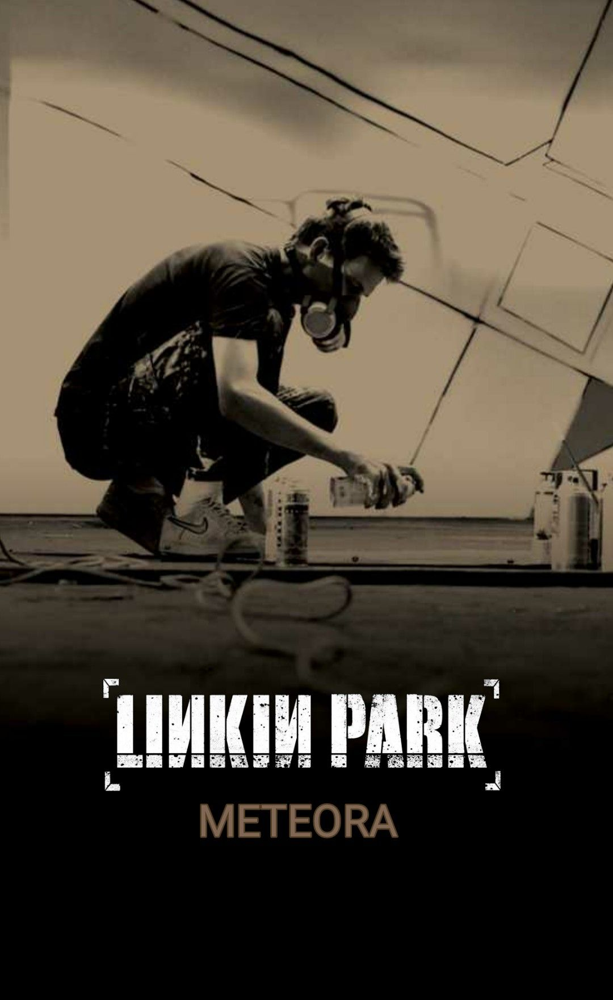
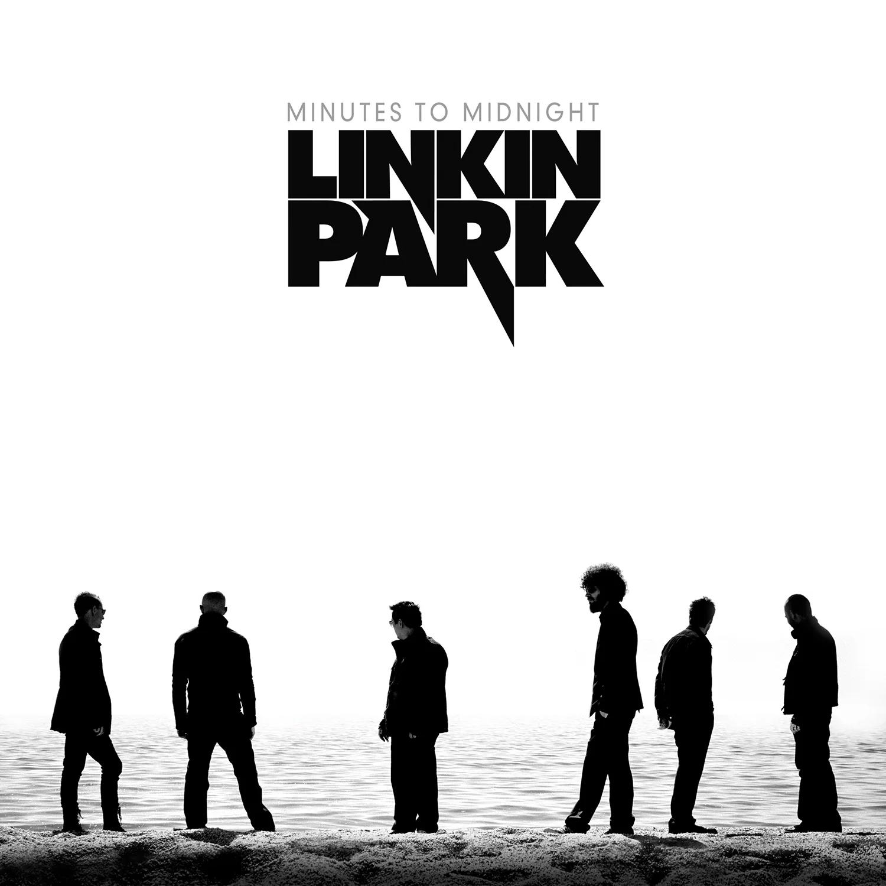
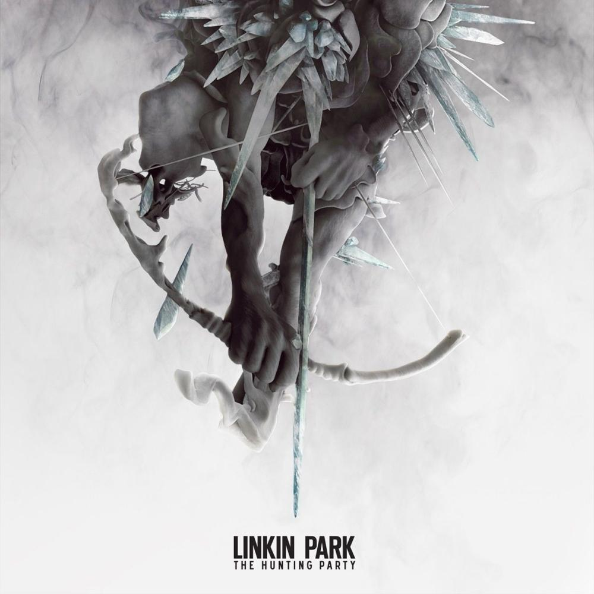
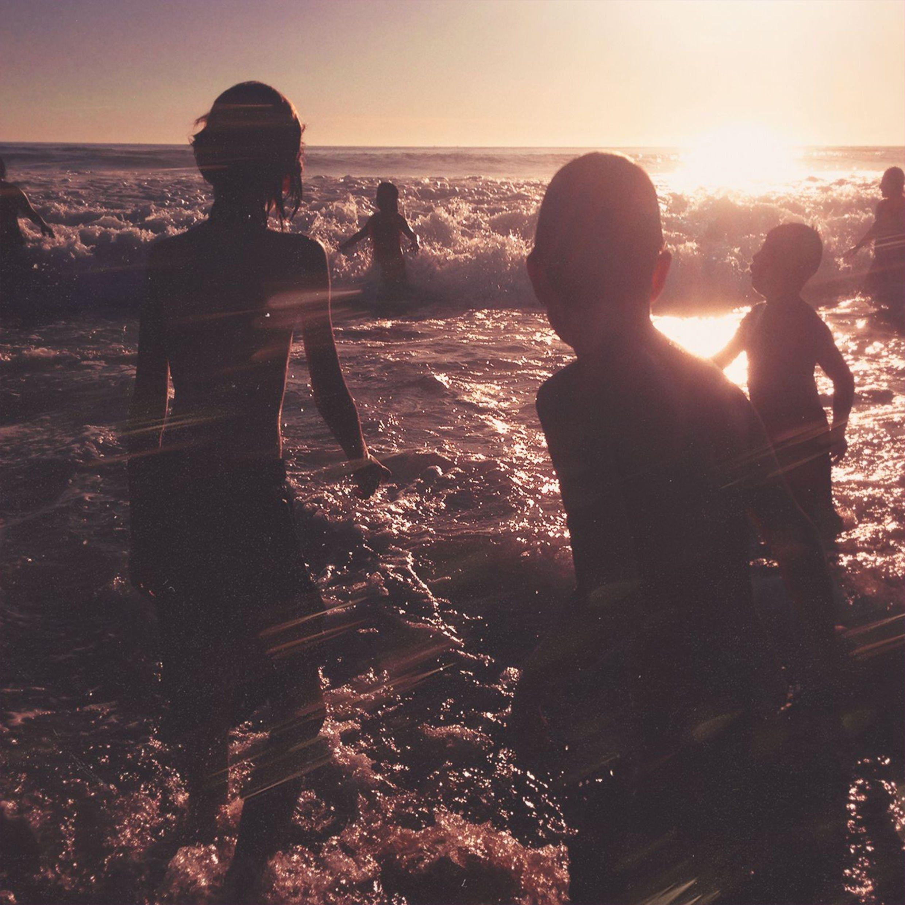
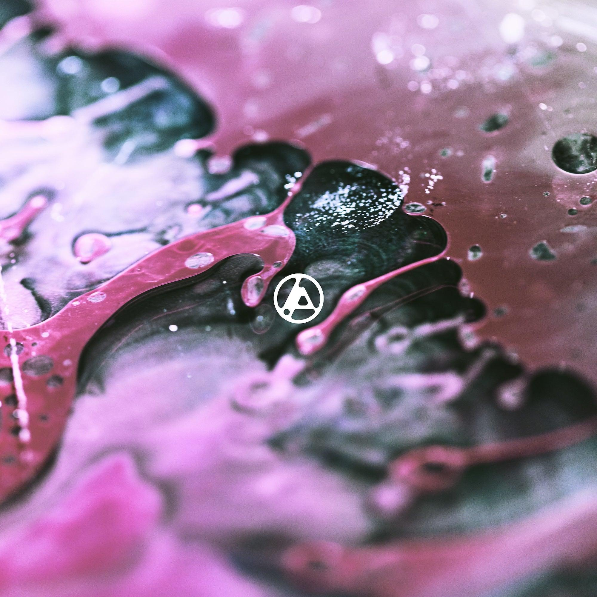

ARCHIVE NO. 001
2000
HYBRID THEORY
จุดเริ่มต้นของเสียงดนตรีที่ผสมผสาน Rock และ Rap อย่างมีเอกลักษณ์
DEBUT ALBUMA PERSONAL MUSIC ARCHIVE
บางเพลงไม่ได้เป็นแค่เพลง
แต่มันกลายเป็นส่วนหนึ่งของชีวิต
Linkin Park ไม่ได้เป็นเพียงวงดนตรี ที่ฟังในเวลาว่าง แต่เป็นวงที่มีเพลงและเนื้อหา ซึ่งทำให้รู้สึกเชื่อมโยงกับตัวเองในหลายช่วงเวลา
Personal Collection นี้จึงเป็นพื้นที่รวบรวม อัลบั้ม เรื่องราว และความทรงจำที่มีต่อวง ผ่านมุมมองของคนฟังคนหนึ่ง
READ MY STORY ↗ทุกอย่างเริ่มต้นจากการฟัง ก่อนจะกลายเป็นความชอบ และความผูกพันที่มากกว่าที่คิด
เริ่มต้นจากการได้รู้จักเพลงของ Linkin Park เสียงดนตรีที่มีเอกลักษณ์ ผสมผสานระหว่าง Rock, Rap และ Electronic ทำให้วงนี้ แตกต่างจากวงอื่นที่เคยฟัง
เมื่อได้ฟังเพลงมากขึ้น ก็เริ่มสนใจ ความหมายของเนื้อเพลง เรื่องราวเบื้องหลัง และผลงานในแต่ละอัลบั้ม
ความชอบค่อย ๆ เปลี่ยนเป็นความอยาก รวบรวมผลงานของวง แต่ละอัลบั้มจึงเป็น มากกว่าสิ่งของ เพราะมีเรื่องราว และความรู้สึกที่แตกต่างกันอยู่ในนั้น
ผลงานที่รวบรวมไว้
จากวงดนตรีที่มีความหมาย

ARCHIVE NO. 001จุดเริ่มต้นของเสียงดนตรีที่ผสมผสาน Rock และ Rap อย่างมีเอกลักษณ์
DEBUT ALBUM
ARCHIVE NO. 002ความหนักแน่นของดนตรี และอารมณ์ที่ชัดเจนยิ่งขึ้น
STUDIO ALBUM
ARCHIVE NO. 003การเปลี่ยนแปลงแนวดนตรี และการเติบโตของวง
STUDIO ALBUM ARCHIVE NO. 004
ARCHIVE NO. 004
การทดลองเสียงดนตรี และการเล่าเรื่องผ่านแนวคิดที่แตกต่าง
STUDIO ALBUM ARCHIVE NO. 005
ARCHIVE NO. 005
การนำเสียงดนตรีในอดีต มาผสมกับแนวทางใหม่ของวง
STUDIO ALBUM
ARCHIVE NO. 006กลับสู่ซาวด์ Rock ที่ดิบ หนักแน่น และเต็มไปด้วยพลัง
STUDIO ALBUM
ARCHIVE NO. 007อีกด้านหนึ่งของวง ผ่านบทเพลงที่เน้นอารมณ์และความรู้สึก
STUDIO ALBUM
ARCHIVE NO. 008บทใหม่ของวงกับการเริ่มต้น และการเดินทางไปข้างหน้าอีกครั้ง
STUDIO ALBUMบางเพลงอาจจบลงเมื่อเสียงดนตรีหยุดเล่น แต่ความรู้สึกที่เกิดขึ้นระหว่างฟัง ยังคงอยู่กับเราเสมอ
Linkin Park เพราะเป็นวงดนตรี ที่มีเอกลักษณ์ทั้งด้านเสียงดนตรี เนื้อหา และการนำเสนอผลงาน
สิ่งที่ทำให้วงนี้มีความหมาย ไม่ได้มีเพียงเพลงที่ชอบ แต่ยังรวมถึง ความรู้สึกและความทรงจำที่เกิดขึ้น ในช่วงเวลาต่าง ๆ ของชีวิต
Collection นี้จึงเป็นการรวบรวม สิ่งที่สนใจและอยากเก็บรักษาไว้ พร้อมกับบันทึกความชอบส่วนตัว ผ่านผลงานของวงดนตรีวงหนึ่ง
PERSONAL INTEREST
ALBUM COLLECTION
MEMORIES